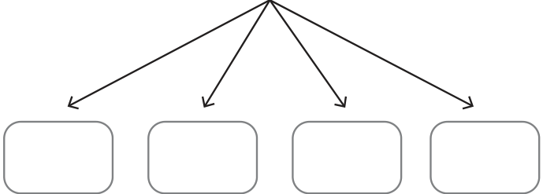
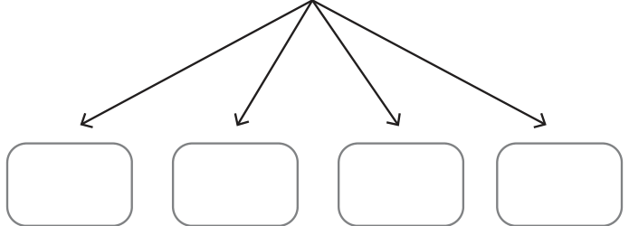
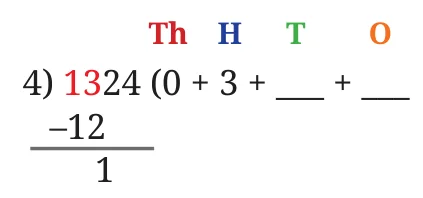
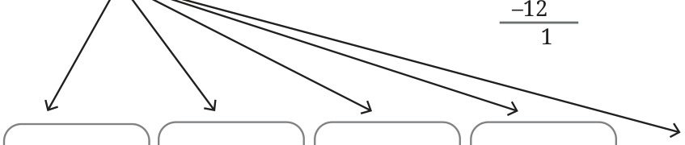
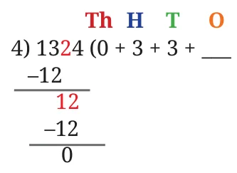
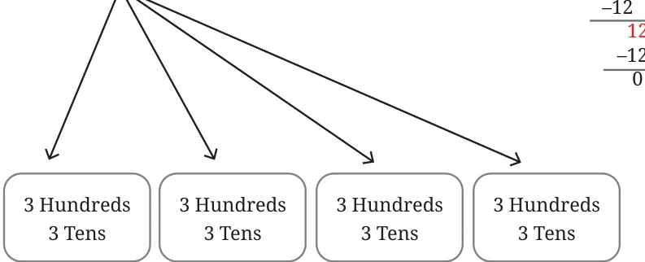
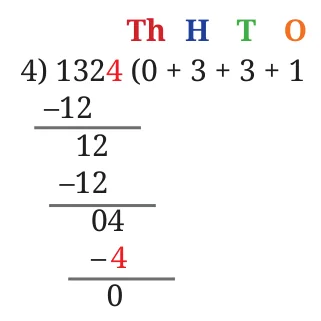
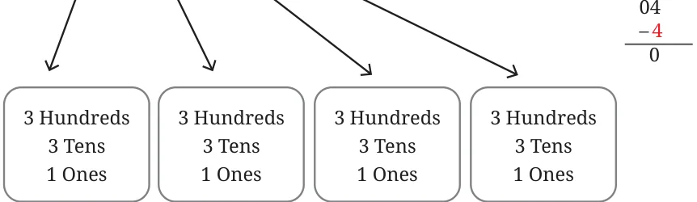

We have seen how to divide two counting numbers to get a decimal quotient. We first represented the division as a fraction. Then we found an equivalent fraction, with the denominator being of the form 1, 10, 100, 1000, and so on. It was then easy to represent this equivalent fraction as a decimal. Now, let us look at the division using place value procedure to calculate the decimal quotient.
Suppose we want to write the quotient \(\frac{10}{3}\) as a decimal. Can we convert this fraction to an equivalent fraction with a denominator such as 1, 10, 100, 1000, etc.? It is not possible. So, we need a more general method to divide any two counting numbers. Let us see how we can use division using place value for this. Let us start with a quick recap of division using place value.
Example 8: Find the value of \(1324 \div 4\).
\(1324 \div 4 \rightarrow\) Divide 1324 into 4 equal parts.
1 Thousand \(+ 3\) Hundreds \(+ 2\) Tens \(+ 4\) Ones

1 Thousand \(\div 4 \rightarrow\) Not possible without regrouping.
Regroup 1 Thousand into 10 Hundreds.
10 Hundreds \(+ 3\) Hundreds \(= 13\) Hundreds.
13 Hundreds \(+ 2\) Tens \(+ 4\) Ones

13 Hundreds \(\div 4 \rightarrow\) Each part gets 3 Hundreds, and 1 Hundred remains.
13 Hundreds \(+ 2\) Tens \(+ 4\) Ones


Regroup 1 Hundred into 10 Tens.
10 Tens \(+ 2\) Tens \(= 12\) Tens.
12 Tens \(\div 4 \rightarrow\) Each part gets 3 Tens.
12 Tens \(+ 4\) Ones


4 Ones \(\div 4 \rightarrow\) Each part gets 1 Ones.
4 Ones


So, \(1324 \div 4 = 0\) Thousands \(+ 3\) Hundreds \(+ 3\) Tens \(+ 1\) Ones \(= 331\).
We also call this division using place values as ‘long division’.